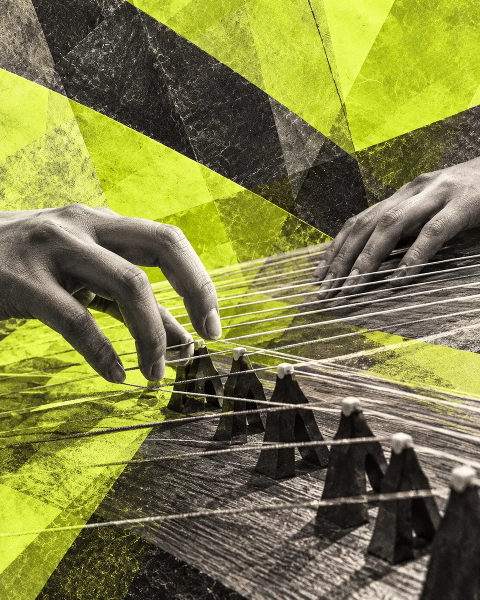

seeing
sound.
Visual art, interaction & the spaces between.

Looking closely.
Listening carefully.
A little about Claire
AI concept · Not Claire’s work

Light at the threshold
Drawing · Painting · Observation
Open direction
AI concept · Not Claire’s work

Hands that remember
Gesture · Drawing · Material
Open direction
AI concept · Not Claire’s work

A listening map
Sound · Image · Interaction
Open direction
A foundation in listening
Nine years
Nine years
of listening.
Guzheng · A solo recital announced for
Canada YC Music Academy, Richmond
A closer look.
I’m Claire, a student exploring how images, materials, and sound can change what we notice.
About Claire